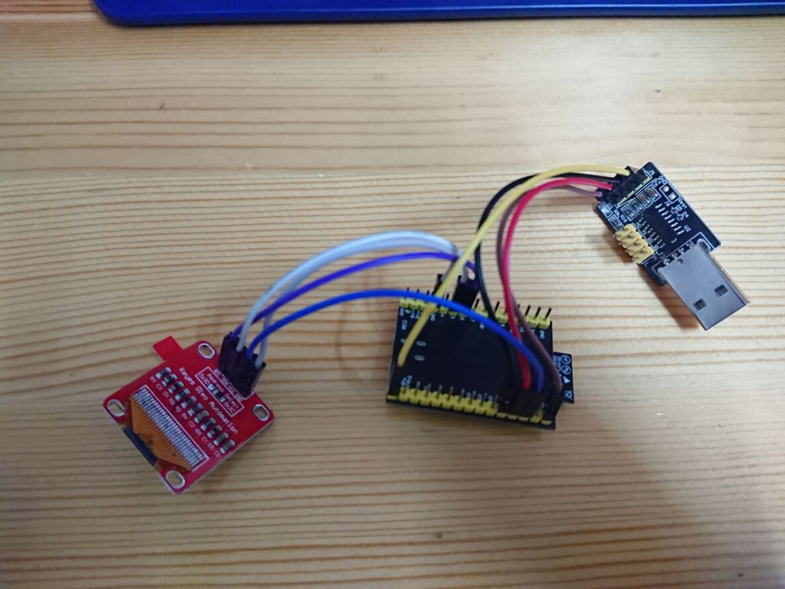
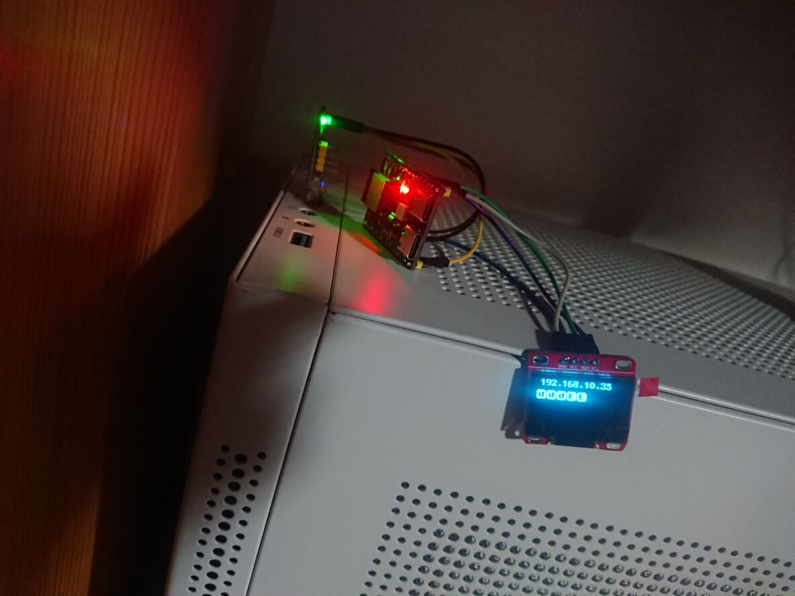
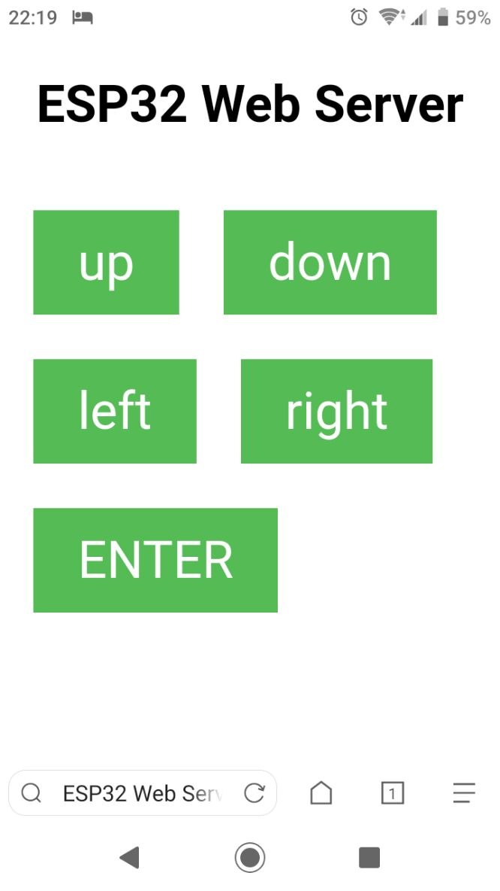

蓝牙键盘鼠标有很多优点，不需要线，也不需要占用一个USB接口，有些键盘还可以多模匹配，切换设备只需要按一个键。但有一个缺点是蓝牙键盘避不开的：必须在操作系统启动之后才能使用。
这就带来一个棘手的问题：在GRUB以及BIOS中，没有办法使用蓝牙键盘鼠标。于是在我换蓝牙键盘之后，还是不得不常备一个有线键盘或者2.4GHz的无线键盘——直接把蓝牙键盘的种种好处都抵消掉了。如果手边恰好没有有线键盘/2.4GHz无线键盘，那我就无法在开机选操作系统。
因此我做了这个东西进行补救：基于esp32-c3的网络控制键盘（下文直接称为esp32键盘）。
工作方式
大概就是esp32-c3经由ch9329串口转USB HID模块，连接到主机上，在主机看来，esp32-c3就是个USB键鼠。esp32-c3同时也连接到本地的WiFi，并且运行一个HTTP服务端。访问它会返回一个网页，网页中有若干按钮，按下网页上的按钮时会给esp32-c3发请求。esp32-c3解析请求后，通过ch9329模拟键盘按下那个键。
有了这个esp32键盘之后，我就可以通过手机模拟一个USB键盘的操作，从而在GRUB界面里面选操作系统，无需常备一块有线键盘。
材料
- esp32-c3-devkitm-1（某宝随便买的）
- ch9329模块（某宝随便买的）
- ssd1306 128x64的显示屏（很久以前某宝买的）（可选）
- 杜邦线若干
用到的库
- 参照乐鑫官网配好Arduino IDE（也就是安装esp32开发板）
- 在Arduino IDE安装u8g2库，用来操作显示屏（可选）
- 在Arduino IDE安装CH9219_Keyboard库
导线连接
如图所示
代码
#include <WiFi.h>
#include <WiFiClient.h>
#include <WebServer.h>
#include <uri/UriBraces.h>
#include <Arduino.h>
#include <U8g2lib.h>
#ifdef U8X8_HAVE_HW_SPI
#include <SPI.h>
#endif
#ifdef U8X8_HAVE_HW_I2C
#include <Wire.h>
#endif
#include "CH9329_Keyboard.h"
#define WIFI_SSID "你的WiFi名(SSID)"
#define WIFI_PASSWORD "你的WiFi密码"
// Defining the WiFi channel speeds up the connection:
#define WIFI_CHANNEL 6
U8G2_SSD1306_128X64_NONAME_F_HW_I2C u8g2(U8G2_R0, /* reset=*/ U8X8_PIN_NONE, /* clock=*/ 6, /* data=*/ 5);
WebServer server(80);
const int press_up = 1, press_down = 2, press_right = 3, press_left = 4, press_enter = 5;
#define QUEUE_SIZE 7
int press_history_queue[QUEUE_SIZE] = {-1, -1, -1, -1, -1};
int p_front = 0, p_rear = 0;
int queue_len = 0;
char queue_str[QUEUE_SIZE + 3];
char queue_str_map[] = {'0', 'U', 'D', 'L', 'R', 'E'};
int position_x = 0, position_y = 0;
uint64_t counter_default = 4096;
uint64_t counter = counter_default;
uint64_t counter_close_display_default = 32768;
uint64_t counter_close_display = counter_close_display_default;
uint64_t cycles = 0;
int real_cycles = 0;
void pop_queue() {
if (queue_len == 0) {
return;
}
p_front = (p_front + 1) % QUEUE_SIZE;
queue_len --;
}
void push_queue(int item) {
if (queue_len == QUEUE_SIZE) {
pop_queue();
}
press_history_queue[p_rear] = item;
p_rear = (p_rear + 1) % QUEUE_SIZE;
queue_len ++;
}
void update_queue_str() {
int i = 0;
for (i = 0; i < queue_len; ++i) {
queue_str[i] = queue_str_map[press_history_queue[(p_front + i) % QUEUE_SIZE]];
}
queue_str[i] = '\n';
}
void update_position() {
position_x = (position_x + 1) % (20);
position_y = (position_y + 1) % (30);
updateDisplay();
}
void updateDisplay() {
u8g2.clearBuffer(); // clear the internal memory
u8g2.setFont(u8g2_font_t0_15b_tn); // choose a suitable font
u8g2.drawStr(position_x,position_y+10, WiFi.localIP().toString().c_str()); // write something to the internal memory
String cycles_str = String("LOOP/1024=") + String(cycles);
u8g2.setFont(u8g2_font_chikita_tr);
u8g2.drawStr(position_x, position_y+17, cycles_str.c_str());
u8g2.setFont(u8g2_font_tenstamps_mf); // choose a suitable font
u8g2.drawStr(position_x,position_y+34, queue_str); // write something to the internal memory
u8g2.sendBuffer(); // transfer internal memory to the display
}
void closeDisplay() {
u8g2.clearBuffer();
u8g2.sendBuffer();
}
void sendHtml() {
String response = R"(
<!DOCTYPE html><html>
<head>
<title>ESP32 Web Server Demo</title>
<meta name="viewport" content="width=device-width, initial-scale=1">
<style>
html { font-family: sans-serif; text-align: center; width: 100vw; }
body { display: inline-flex; flex-direction: column; }
h1 { margin-bottom: 1.2em; }
h2 { margin: 0; }
div { display: flex; flex-wrap: wrap; }
.btn { background-color: #5B5; border: none; color: #fff; padding: 0.5em 1em;
font-size: 2em; text-decoration: none; margin: 0.5em; }
.btn.OFF { background-color: #333; }
}
</style>
</head>
<body>
<h1>ESP32 Web Server</h1>
<div class="button-area">
<span id="up" class="btn">up</span>
<span id="down" class="btn">down</span>
<span id="left" class="btn">left</span>
<span id="right" class="btn">right</span>
<span id="enter" class="btn">ENTER</span>
</div>
<script>
var up = document.getElementById("up");
var down = document.getElementById("down");
var right = document.getElementById("right");
var left = document.getElementById("left");
var enter = document.getElementById("enter");
up.onclick = async function() {
await fetch("/press/1");
}
down.onclick = async function() {
await fetch("/press/2");
}
right.onclick = async function() {
await fetch("/press/3");
}
left.onclick = async function() {
await fetch("/press/4");
}
enter.onclick = async function() {
await fetch("/press/5");
}
</script>
</body>
</html>
)";
server.send(200, "text/html", response);
}
void setup(void) {
Serial.begin(115200);
Serial1.begin(9600, SERIAL_8N1, 3, 2);
CH9329_Keyboard.begin(Serial1);
WiFi.begin(WIFI_SSID, WIFI_PASSWORD, WIFI_CHANNEL);
Serial.print("Connecting to WiFi ");
Serial.print(WIFI_SSID);
// Wait for connection
while (WiFi.status() != WL_CONNECTED) {
delay(100);
Serial.print(".");
}
Serial.println(" Connected!");
Serial.print("IP address: ");
Serial.println(WiFi.localIP());
server.on("/", sendHtml);
server.on(UriBraces("/press/{}"), []() {
String press_button = server.pathArg(0);
Serial.print("Press #");
Serial.println(press_button);
switch (press_button.toInt()) {
case 1:
// up
CH9329_Keyboard.press(KEY_UP_ARROW);
break;
case 2:
// down
CH9329_Keyboard.press(KEY_DOWN_ARROW);
break;
case 3:
// right
CH9329_Keyboard.press(KEY_RIGHT_ARROW);
break;
case 4:
// left
CH9329_Keyboard.press(KEY_LEFT_ARROW);
break;
case 5:
// enter
CH9329_Keyboard.press(KEY_RETURN);
break;
}
push_queue(press_button.toInt());
update_queue_str();
updateDisplay();
Serial.println(queue_str);
server.send(200);
CH9329_Keyboard.releaseAll();
counter_close_display = 32768;
});
server.begin();
u8g2.begin();
Serial.println("HTTP server started");
updateDisplay();
}
void loop(void) {
server.handleClient();
delay(2);
real_cycles = (real_cycles + 1) % 1024;
if (real_cycles == 1023) {
cycles++;
}
if (counter > 0) {
counter--;
} else {
counter = counter_default;
update_position();
}
if (counter_close_display > 0) {
counter_close_display--;
} else {
closeDisplay();
}
}
注：显示屏只是为了方便看IP地址。如果你不需要显示屏，就把u8g2相关的东西全部删掉
注2：记得把WiFi名（SSID）和密码换成自己的
结果
